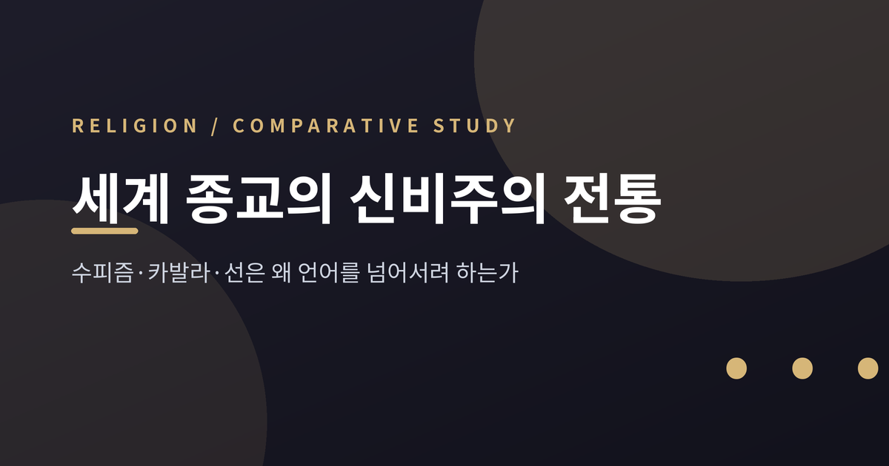
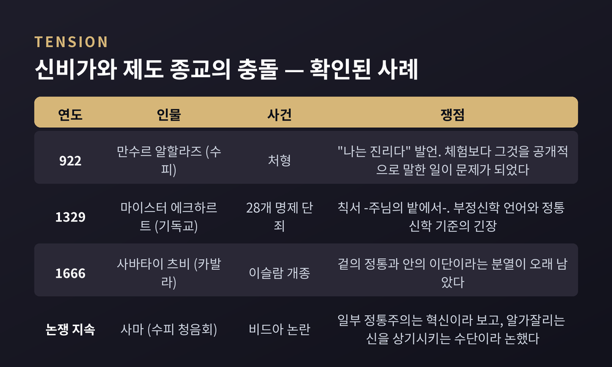
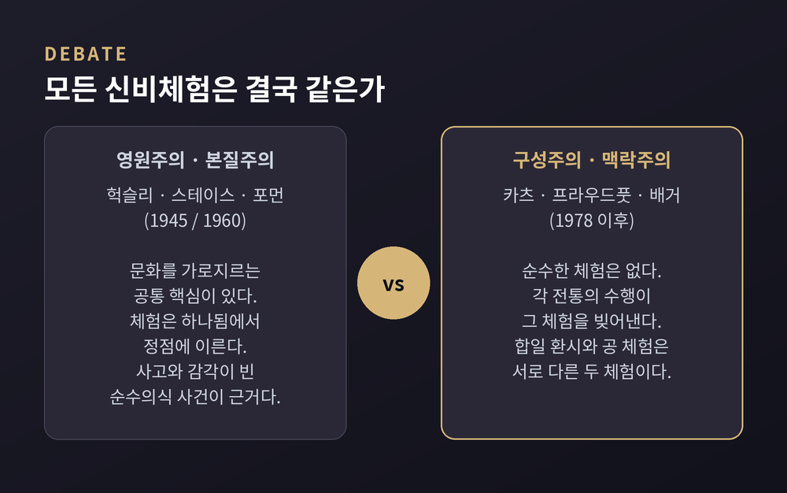

이번 글에서는 세계 종교의 신비주의 전통을 비교종교학의 눈으로 정리해 보겠습니다.
수피즘, 카발라, 선(禪), 그리고 기독교와 힌두교의 관상 전통까지. 서로 만난 적 없는 이 흐름들이 이상하리만치 닮은 고백 하나를 공유합니다. "말로는 안 된다"는 고백입니다. 어느 전통이 옳은지를 가리려는 글이 아닙니다. 각 전통이 언어의 벽 앞에서 무엇을 했는지, 그리고 학계가 그 닮음을 어떻게 읽어 왔는지를 살펴보려 합니다.
신비주의 문헌을 펼치면 같은 문장이 반복됩니다. 이것은 말로 옮길 수 없다.
그런데 정작 신비가들만큼 많은 글을 남긴 이들도 드뭅니다. 시집, 논서, 편지, 주석이 산더미입니다. 이 모순이 신비주의 연구의 오래된 출발점입니다.
윌리엄 제임스는 『종교적 경험의 다양성』에서 신비 상태의 표지 네 가지를 꼽았습니다. 형언불가능성, 인식적 성질, 일시성, 수동성입니다. 어떤 언어로도 담기지 않고, 깊은 진리의 계시처럼 느껴지며, 오래 가지 않고, 자기 의지 너머의 무언가에 붙잡힌 느낌이라는 것입니다. 이 네 항목은 이후 신비체험을 정의하려는 거의 모든 시도의 기본 틀로 남았습니다.
다만 여기에는 미묘한 어긋남이 있습니다. 스탠퍼드 철학사전은 이 점을 짚습니다. 고전 신비가들이 "형언불가"를 말할 때는 대개 '말로 표현할 수 있는 것보다 더 많은 것이 있다'는 뜻이지, 아무 말도 할 수 없다는 뜻이 아니었습니다. 절대적 기술 불가능성을 신비주의의 본질로 규정한 쪽은 오히려 제임스였습니다.
논리적 난점도 일찍부터 지적되었습니다. 아우구스티누스는 이렇게 물었습니다. "X는 형언불가능하다"고 말하는 것 자체가 X에 대해 무언가를 말하는 일 아닌가. 이 물음은 20세기에 앨빈 플랜팅가와 키스 얀델이 다시 꺼냈고, 지금도 살아 있습니다.
언어의 벽 앞에서 가장 오래된 대응은 부정입니다.
기독교에서 이 길을 열어 놓은 사람은 500년경의 위디오니시우스입니다. 『신의 이름들』과 『신비신학』에서 비아 네가티바, 곧 부정의 길을 제시했습니다. 그는 '초본질적 신성'을 신에 대한 모든 긍정적 술어와 구별했습니다. 신이 무엇인지는 말할 수 없고, 무엇이 아닌지만 말할 수 있다는 것입니다.
흥미로운 대목은 그다음입니다. 부정신학의 창시자로 불리는 그가 종교적 상징과 신의 이름에 관한 긍정적 저작도 함께 남겼다는 사실입니다. 부정의 길이 긍정의 길을 몰아내지는 않았던 셈입니다.
인도에서는 같은 방법이 훨씬 이른 시기에 등장합니다. 우파니샤드의 '네티 네티', 곧 "이것도 아니고, 저것도 아니다"입니다. 『브리하다란야카 우파니샤드』 2.3.6과 3.9.26에 또렷하게 나옵니다. 문제의 구조는 명료합니다. 모든 언어는 형상과 성질과 관계를 전제합니다. 그러니 "브라만은 X다"라고 말하는 순간, 이미 브라만을 제한한 것이 됩니다.
샹카라의 아드바이타 베단타는 여기서 한 걸음 더 갑니다. 속성 없는 브라만을 니르구나 브라만이라 부르는데, 샹카라는 그 표현조차 여전히 형상 없는 브라만의 한 형상이라고 적었습니다. 부정의 언어도 결국 언어라는 자각입니다.
이슬람의 신비 전통인 수피즘은 8세기에 뚜렷한 모습을 갖추기 시작했습니다.
'수피'라는 말은 양털을 뜻하는 '수프'에서 왔다고 보는 견해가 유력합니다. 초기 금욕가들이 입던 모직 옷을 가리킨 것입니다. 금욕과 세속 이탈에서 출발해, 신에 대한 직접적이고 체험적인 앎으로 무게중심이 옮겨 갔습니다. 801년에 세상을 떠난 라비아 알아다위야는 그 전환의 상징으로 꼽힙니다. 금욕에서 신을 향한 황홀한 사랑으로 강조점이 이동한 것입니다. 개별 수행이 정식 교단, 곧 타리카로 결집한 것은 12세기 무렵입니다.
세 사람의 이름이 특히 자주 거론됩니다. 1111년에 세상을 떠난 알가잘리는 『종교학의 부흥』으로 온건한 신비주의를 이슬람 주류 안에 정착시켰습니다. 이븐 아라비(1165~1240)는 '가장 위대한 스승'으로 불리며, 모든 존재를 신적 실재의 현현으로 보는 존재일성 사유와 연결됩니다. 루미(1207~1273)는 페르시아어 최고의 신비주의 시인으로, 그의 『마스나비』는 신비주의 사상의 백과사전이라 평가받습니다.
수행의 중심에는 디크르가 있습니다. '신을 기억함'이라는 뜻으로, 신의 이름과 정형구를 정해진 호흡과 자세에 실어 되풀이합니다. 여기에 사마가 더해집니다. 문자 그대로는 '들음'이며, 신애의 시를 노래하는 의례적 청음회입니다. 9세기 무렵 시작된 것으로 봅니다.
루미가 『마스나비』를 여는 방식은 이 글의 주제를 그대로 압축합니다. 첫 구절은 갈대 피리의 노래입니다. 갈대의 이야기를 들어라, 이별을 하소연하는. 갈대는 갈대밭에서 잘려 나온 영혼이고, 그 잘림 때문에 평생 탄식합니다. 여기서 언어는 정의하지 않습니다. 소리와 이미지로 에둘러 갈 뿐입니다.
유대 신비주의의 중심 문헌은 『조하르』입니다.
13세기 말 스페인 카스티야에서 성립했습니다. 신성 안의 이원성, 그리고 열 개의 세피로트 교리를 처음으로 온전히 다룬 문헌입니다. 세피로트는 무한한 창조주가 유한한 세계와 관계 맺고 그것을 지탱하는 단계적 유출을 가리킵니다.
저자를 두고는 견해가 갈립니다. 게르숌 숄렘은 아람어 문법의 오류와 스페인어 어휘의 흔적을 근거로 모세 데 레온(1250년경~1305)을 주저자로 지목했습니다. 반면 예후다 리베스와 모셰 이델은 한 사람이 아니라 데 레온 주변 신비가 집단의 산물로 봅니다. 중세 카스티야라는 배경 자체는 학계 합의에 가깝지만, 몇 사람의 손이 닿았는지는 여전히 열린 문제입니다. 정통 유대교 일각에서는 2세기 현자 시몬 바르 요하이의 저작이라는 전통적 견해를 지금도 견지합니다.
16세기 갈릴리의 사페드에서 이 흐름은 다시 크게 갈라집니다. 이삭 루리아(1534~1572)가 1570년 사페드로 옮겨 자신의 체계를 세웠습니다. 세 낱말로 요약됩니다. 침춤, 곧 신성이 스스로 물러나 창조를 위한 빈 공간을 남기는 수축. 셰비랏 하켈림, 곧 신적 빛이 그릇을 깨뜨려 껍질 속에 흩어지는 사건. 그리고 티쿤, 흩어진 빛을 되모아 본래의 조화를 회복하는 일입니다.
언어와 가장 직접적으로 씨름한 쪽은 13세기의 아브라함 아불라피아입니다. 그는 '문자 조합의 지혜'라 불린 기법을 가르쳤습니다. 히브리어 단어를 낱낱의 문자로 해체하고 계속 바꿔 조합합니다. 의미를 붙잡으려는 일상의 마음이 잦아들 때까지 반복합니다. 단식과 흰 옷으로 몸을 정화하고, 호흡에 맞춰 문자를 영창합니다.
여기서 언어는 뜻을 나르는 그릇이 아니라 재료입니다. 의미를 해체함으로써 의미 너머로 간다는 발상입니다.
선은 중국 당대(618~907)에 형성되었습니다.
홍인과 혜능 같은 스승들과 이어진 공동체들이 단박의 깨달음, 그리고 '가르침 밖의 특별한 전승'을 내세웠습니다. 그 정신을 압축한 것이 네 구절입니다. 교외별전, 불립문자, 직지인심, 견성성불.
전통은 이 네 구절을 6세기 초의 반전설적 인물 보리달마의 말로 전합니다. 다만 문헌학의 결론은 조금 다릅니다. 각 구절이 송대 이전 자료에도 흩어져 나타나기는 하지만, 네 구절이 하나의 게송으로 묶여 등장하는 것은 송대에 들어와서입니다. 1108년에 편찬된 『조정사원』에 보리달마에게 귀속된 형태로 실려 있습니다.
그러니까 "문자에 세우지 않는다"는 선의 자기 규정 자체가, 상당히 후대에 문자로 정식화된 표어일 가능성이 큽니다. 이 아이러니는 선 안에서도 낯설지 않았습니다.
공안 수행의 결정적 전환은 12세기에 일어납니다. 대혜종고(1089~1163)가 간화선을 정식화했습니다. 공안 전체가 아니라 그 결정적 한 구절, 곧 화두를 명상 대상으로 삼는 방식입니다. 그는 '의심'의 역할을 특히 강조했고, 이 수행이 출가자만의 것이 아니라 재가자도 일상 속에서 할 수 있는 길이라고 보았습니다.
그가 남긴 일화 하나가 이 전통의 언어관을 잘 보여 줍니다. 당대의 공안 수행이 피상적인 문학 감상으로 흐른다고 판단한 대혜는, 자기 스승의 공안집인 『벽암록』의 판본을 모두 태우고 인쇄용 목판까지 없애라고 명했습니다. 스승의 책을 불태운 제자입니다.
한 가지는 덧붙여야 공정합니다. 간화선은 단박의 방법을 표방하지만, 실제로는 집중을 점진적으로 완성해 가는 과정에 가깝다는 학계의 지적도 함께 있습니다.
신비주의는 어느 전통에서든 제도와 불편한 관계를 맺어 왔습니다. 확인된 사례 셋만 놓아 보겠습니다.
922년, 수피 만수르 알할라즈가 처형되었습니다. 문제가 된 것은 "나는 진리다"라는 발언과 자신을 신성과 동일시하는 시들이었습니다. 여기서 쟁점의 성격을 눈여겨볼 만합니다. 당대 국가 신학자들은 이 말이 입문자에게는 신비적 지혜일 수 있으나 대중에게 풀어놓기에는 위험하다고 보았습니다. 체험 자체보다 그것을 공개적으로 말하는 일이 문제였던 것입니다.
1329년 3월 27일, 교황 요한 22세가 칙서 『주님의 밭에서』로 마이스터 에크하르트의 28개 명제를 단죄했습니다. 칙서는 그가 교회에 복종했다는 점도 함께 적었습니다. 학계는 이 사건을 에크하르트의 부정신학적 언어와 중세 정통 신학의 기준 사이에 있던 실질적 긴장으로 읽습니다.
1666년, 카발라에 크게 빚진 신학을 가르치던 사바타이 츠비가 이스탄불에 갇힌 상태에서 이슬람으로 개종했습니다. 겉으로는 정통, 안으로는 이단이라는 분열이 그 뒤로 오래 남았고, 이 충격은 전통 유대교의 지형을 바꾼 요인 가운데 하나로 거론됩니다. 다만 개종의 동기를 둘러싼 세부는 전승적 요소가 섞여 있어, 단정하기 어렵습니다.
비슷한 긴장은 수행 방식에서도 반복되었습니다. 사마를 두고 일부 정통주의 해석은 예언자적 선례가 없는 혁신, 곧 비드아라고 보았습니다. 반대편에서 알가잘리는 『종교학의 부흥』에 상당한 분량을 할애해, 올바른 의도와 적절한 자리에서라면 음악과 노래가 신을 상기시키는 강력한 수단이 될 수 있다고 논했습니다. 천 년 가까이 이어진 논쟁입니다. 참고로 메블레비 교단의 세마 의식은 2008년 유네스코 인류무형문화유산 대표목록에 올랐습니다.

이 지점에서 20세기 종교학의 가장 뜨거운 논쟁이 시작됩니다.
한쪽에는 공통 핵심을 주장하는 흐름이 있습니다. 올더스 헉슬리는 1945년 『영원의 철학』에서 모든 신앙 아래 공통된 신적 실재가 있다고 보았습니다. 월터 스테이스는 1960년에 외향적 신비체험과 내향적 신비체험을 구분하며, 감각 지각이 포함되면 외향적, 그렇지 않으면 내향적이라고 정리했습니다. 그리고 두 유형 모두 '하나'의 지각과 그것과의 합일에서 정점에 이른다고 보았습니다. 로버트 포먼은 사고와 감각과 감정이 모두 비어 있는 '순수의식 사건'을 문화를 가로지르는 단일 유형으로 제시했습니다.
다른 쪽에는 구성주의가 있습니다. 스티븐 카츠는 신비체험이 신비가가 지니고 들어간 개념과 신념에 의해 구성되고 채색된다고 봅니다. 순수하거나 매개되지 않은 신비체험은 없다는 것입니다. 각 전통의 수행이 그 수행이 낳는 체험을 빚어내므로, 기독교 신비가의 합일 환시와 불교도의 공(空) 체험은 같은 실재와의 두 만남이 아니라 서로 다른 두 체험이라는 결론이 따릅니다.
구성주의에도 결이 있습니다. 문화가 최소한의 구조를 제공한다고만 보는 부드러운 구성주의는 본질주의와 양립할 수 있습니다. 반면 문화가 인지적 내용을 완전히 결정한다고 보는 강한 구성주의는 공통 핵심 주장을 부정하게 됩니다.
스테이스 쪽 사정도 간단하지 않습니다. 그는 불교도가 명시적으로 거부하는 해석을 그들의 체험에 적용했다는 비판을 받았고, 뒤에 선의 신비체험이 자신의 유형론에 맞지 않는다는 점을 스스로 인정했습니다.
예전에는 이 논쟁이 언젠가 결판나리라 여기는 분위기도 있었습니다. 지금은 그렇게 보기 어렵습니다. 스탠퍼드 철학사전이 짚는 이유가 결정적입니다. 우리 손에 있는 것은 신비가의 사후 진술뿐이며, 그 진술이 문화에 의해 형성된다는 데는 양 진영이 이미 동의합니다. 체험 자체로 들어가 그것이 구성된 것인지 확인할 방법이 없습니다.

마지막 축은 현재입니다.
존 카밧진의 마음챙김 기반 스트레스 완화 프로그램은 불교적 틀에서 커리큘럼을 끌어오되, 전면에는 과학적 응용을 내세웠습니다. 그는 초기부터 이 프로그램이 '불교적'이거나 '동양 신비주의'로 비칠 위험을 최대한 피하는 방식으로 말하려 애썼다고 스스로 밝혔습니다. 동시에 그는 마음챙김이 불교 수행의 핵심에 있는 것이라고도 분명히 말합니다.
이 두 문장 사이의 간격이 논쟁의 자리입니다. 명상을 윤리적·철학적 틀에서 떼어낸 덕분에 수백만 명이 접근할 수 있게 되었다는 평가가 있습니다. 동시에 그 과정에서 속이 비었다는 비판도 있습니다. 본래의 길은 윤리와 집중과 지혜를 함께 묶은 것이었는데, 집중과 일부 지혜는 남고 명시적 윤리 틀은 대체로 옆으로 밀렸다는 지적입니다.
뿌리를 어디로 볼지에도 이견이 있습니다. 마음챙김의 불교적 연원을 테라와다 전통 중심으로 설명하는 서사가 지배적인데, 그 편향이 카밧진 작업 안의 대승불교적 영향을 가린다는 반론이 학술지에 제기되어 있습니다.
한 가지는 분명해 보입니다. 오늘의 세속 명상은 이 오래된 계보와 완전히 무관하지도, 그대로 이어진 것도 아닙니다. 그 사이 어딘가에 있습니다.
끝으로 한 마디만 더 드리겠습니다.
수피의 갈대 피리, 카발라의 흩어진 문자, 선의 불태워진 책. 셋 다 언어를 버리려 한 것이 아니라, 언어를 다른 방식으로 부린 흔적입니다. 부정하고, 되풀이하고, 뒤틀고, 노래했습니다. 방법은 달랐지만 문제의식은 겹칩니다.
그 겹침을 같음으로 읽을지, 서로 다른 전통이 각자의 언어로 도달한 다른 자리로 읽을지는 아직 학계에서도 갈립니다. 이 글도 판정하지 않겠습니다.
— "말할 수 없는 것 앞에서, 사람은 침묵하기보다 다른 방식으로 말하는 쪽을 택해 왔다."
무엇을 보았기에 그토록 말이 많아졌느냐고 물으신다면, 남은 것은 결국 그 말들뿐이라고 답하겠습니다. 그리고 그 말들을 읽는 일이, 우리가 할 수 있는 몫일 것입니다.